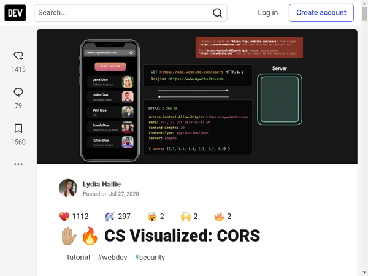
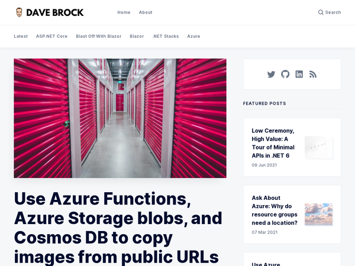
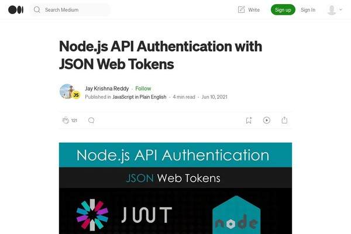
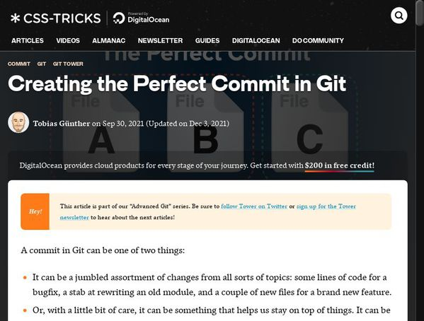
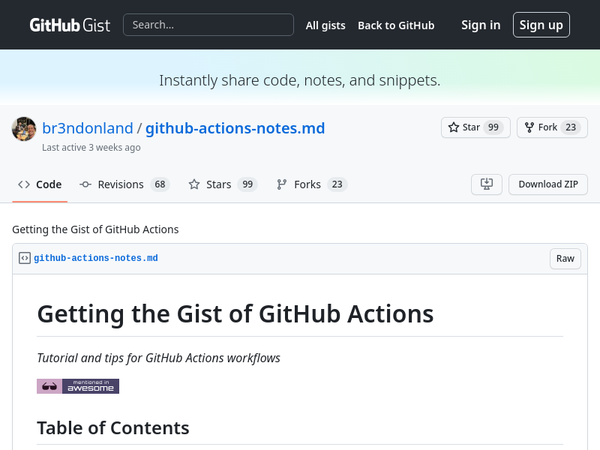
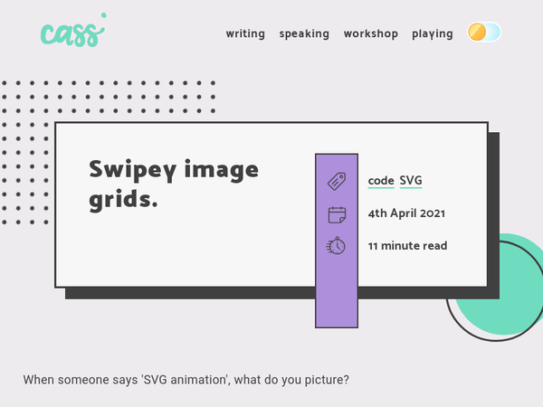

Discoveries #25 - Tutorials & HowTo's
This Discoveries issue is generally about tutorials from different areas: CORS, Azure, Elektron, GitHub Action, SVG. Outstanding articles by outstanding authors, who explain things in an easy and understandable way.
Happy Reading…
- CS Visualized: CORS
- Use Azure Functions, Azure Storage blobs, and Cosmos DB to copy images from public URLs
- Build a Secure Desktop App with Electron Forge and React
- Node.js API Authentication with JSON Web Tokens
- How To Build an SMTP Mail Server with Express, Node, and Gmail
- Advanced Git Series 1/8: Creating the Perfect Commit in Git
- Learn how to use Git and GitHub in a team like a pro
- How to Build Your First JavaScript GitHub Action
- Getting the Gist of GitHub Actions
- Swipey Image Grids (with SVG)
CS Visualized: CORS
by Lydia Halliehttps://dev.to/lydiahallie/cs-visualized-cors-5b8h
What web dev hasn't struggled with CORS errors? Lydia explains here in great detail and with visual support the whys and wherefores of CORS and how to work around problems.
Use Azure Functions, Azure Storage blobs, and Cosmos DB to copy images from public URLs
by Dave Brockhttps://daveabrock.com/2020/11/25/images-azure-blobs-cosmos
In this post, Dave shows how to work with Azure Storage blobs and Cosmos DB to copy images that are available over the public Internet.
Build a Secure Desktop App with Electron Forge and React
by Kilian Valkhofhttps://www.sitepoint.com/electron-forge-react-build-secure-desktop-app/?utm_source=rss
Creating a cross-platform desktop app is easy thanks to Electron. Learn from Kilian how to create a secure desktop app using React, Electron and Electron Forge.
Node.js API Authentication with JSON Web Tokens
by Jay Krishna Reddyhttps://javascript.plainenglish.io/node-js-api-authentication-with-json-web-tokens-bb511f603723
In this article, Jay shows how to access the JSON web token (JWT) in Node.js and also to protect our routes with it.
How To Build an SMTP Mail Server with Express, Node, and Gmail
by Michael Rehnerthttps://daily.dev/blog/how-to-build-an-smtp-mail-server-with-express-node-and-gmail
Michael shows in his tutorial how to use Node and Express to develop a mail server that uses Gmail for free transport via SMTP.
Advanced Git Series 1/8: Creating the Perfect Commit in Git
by Tobias Güntherhttps://css-tricks.com/creating-the-perfect-commit-in-git/
In this series from 2021 on CSS-Tricks, Tobias goes into the most important aspects in the advanced handling of Git in a vivid way. Better commits, branching, collaboration, rebasing, cherry-picking … a good reminder.
Learn how to use Git and GitHub in a team like a pro
by Damian Demasihttps://dev.to/colocodes/learn-how-to-use-git-and-github-in-a-team-like-a-pro-2dk7
This short two-part series by Damian clearly highlights the possibilities of collaboration with Git and the platform Github, which is usually neglected in other tutorials.
How to Build Your First JavaScript GitHub Action
by Bassem Dghaidihttps://www.freecodecamp.org/news/build-your-first-javascript-github-action/
The automation possibilities of Github's Actions seem limitless. There is hardly a JavaScript workflow that cannot be mapped in some way. This is also due to the openness, because anyone can provide workflows. Bassem explains the basic system with examples.
Getting the Gist of GitHub Actions
by Brendon Smithhttps://gist.github.com/br3ndonland/f9c753eb27381f97336aa21b8d932be6
Like Bassem, Brendon shows some of the the basic principle of GitHub Actions, but expands on it with pro tips and workarounds when things get stuck.
Swipey Image Grids (with SVG)
by Cassie Evanshttps://www.cassie.codes/posts/swipey-image-grids/
If you're familiar with CSS animations, you might be interested in this post by Cassie, as she shows how to do it without CSS directly in SVG.
You can interact with this article (applause, criticism, whatever) by mention it in one of your posts or by replying to its syndication on Mastodon, which will also be shown here as a Webmention ... or you leave a good old comment with your GitHub account.
Webmentions
No Webmentions yet...
In case your blog software can't send Webmentions, you can use this form to submit me a mention of this article...


 There are many Mastodon instances out there.
Tell me yours and I will redirect you to the share dialog of your server:
There are many Mastodon instances out there.
Tell me yours and I will redirect you to the share dialog of your server:
Comments